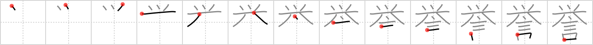

誉
← →
reputation

Reading:
On-Yomi: ヨ — Kun-Yomi: ほま.れ、ほ.める
Heisig story:
Owl . . . tool . . . saying.
Koohii stories:
1) [Copycatken] 25-8-2006(228): This owl's reputation skyrocketed after he created a tool in order to speak human words.
2) [RoboTact] 30-8-2007(62): By word of mouth, owl-luring tool (raise (#1938 挙)) gained a reputation of amazingly effective and reliable device.
3) [Perry] 30-4-2010(39): Stephen Hawking has a reputation of being as smart as an owl but using a tool to speak.
4) [kanjihito] 3-11-2012(9): The wise owl earns its reputation not by its use of tools but by its famous words: who, who.
5) [thermal] 7-7-2008(9): The owl is reputed to be a huge f@&%ing tool.